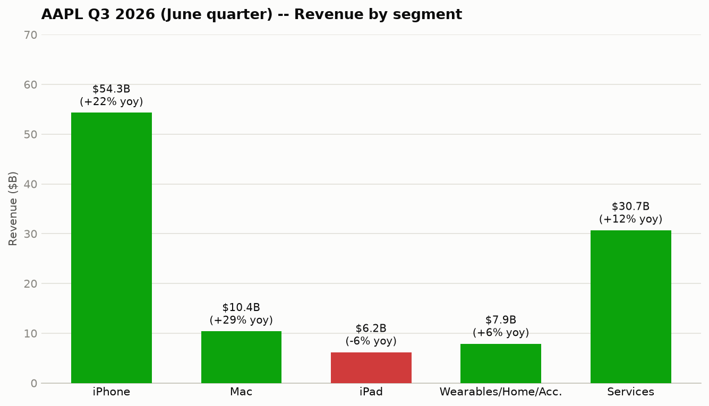
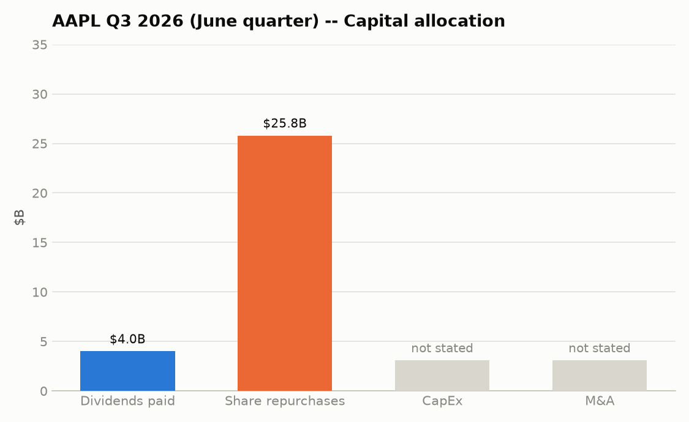
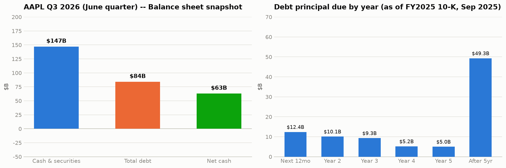

| Segment | Revenue | Growth (yoy) |
|---|---|---|
| iPhone | $54.30B | +22% |
| Mac | $10.40B | +29% |
| iPad | $6.20B | -6% |
| Wearables, Home & Accessories | $7.90B | +6% |
| Services | $30.70B | +12% |
Transcript-extracted (not in MarketDataLibrary for AAPL). Apple doesn't disclose margin by hardware segment, so it's left out rather than estimated.
What's driving each segment:

| Use of cash | Amount (June qtr) | vs. year-ago quarter |
|---|---|---|
| Share repurchases | $25.80B | +19.1% |
| Dividends paid | $4.00B | +2.3% |
| CapEx | $2.46B | -29.1% |
| Debt repaid | $0.23B | -95.9% |
| Debt issued | $0 fiscal-year-to-date | — |
Total returned to shareholders (dividends + buybacks): $29.80B.
M&A: not charted, since a pie slice implies a completed cash outflow. AAPL's SEC filings show $0 in acquisitions cash flow this fiscal year — consistent with the >$30B multi-year Broadcom custom-silicon agreement being a forward supply commitment, not a completed purchase.

| June quarter | |
|---|---|
| Cash & securities | $147B |
| Total debt | $84B |
| Net cash | ~$63B |
Total debt edged down this quarter: AAPL repaid $232M more than it issued (see Capital allocation), with no new debt issued in the period.
When it's due: $12.4B of principal matures in the next 12 months, $10.1B in year two, $9.3B in year three, tapering to $5.2B and $5.0B in years four and five, with $49.3B due after that — a maturity schedule weighted toward the long end, so near-term refinancing risk is limited. This is the aggregate principal-by-year figure AAPL files with the SEC; individual notes (coupon, specific maturity date) aren't broken out at that level in this data.
June quarter (2026-03-29 to 2026-06-27): $152.4M in insider stock sales, zero insider purchases.
| Insider | Title | Shares sold | Value | Avg. price |
|---|---|---|---|---|
| Arthur D. Levinson | Director | 300,000 | $86.74M | $289.14 |
| Timothy D. Cook | CEO | 131,576 | $33.54M | $254.94 |
| Deirdre O'Brien | SVP | 64,317 | $16.43M | $255.50 |
| Sabih Khan | COO | 33,317 | $8.52M | $255.63 |
| Jennifer Newstead | SVP, General Counsel | 16,238 | $4.81M | $296.42 |
| Kevan Parekh | CFO | 6,327 | $1.70M | $268.51 |
| Ben Borders | Principal Accounting Officer | 2,406 | $0.68M | $281.84 |
Most of this coincides with scheduled RSU-vesting dates for Cook, O'Brien, Khan, Newstead, Parekh, and Borders — routine tax-withholding or plan-based sales, not a fresh decision to sell. The exception is Director Arthur Levinson, whose $86.7M sale has no corresponding equity award that quarter, making it the more standalone data point. No insider bought shares on the open market this quarter.
AAPL reported IDC-sourced share gains in both iPhone and Mac this quarter — third-party data, directional rather than precise. On Mac, roughly half of MacBook Neo's large-purchase volume with U.S. education institutions displaced Windows and Chromebook devices, a channel where Apple has historically been a distant third choice. If it holds across future quarters, it points to Mac's competitive position genuinely strengthening there; one quarter isn't enough to call it a durable trend yet.